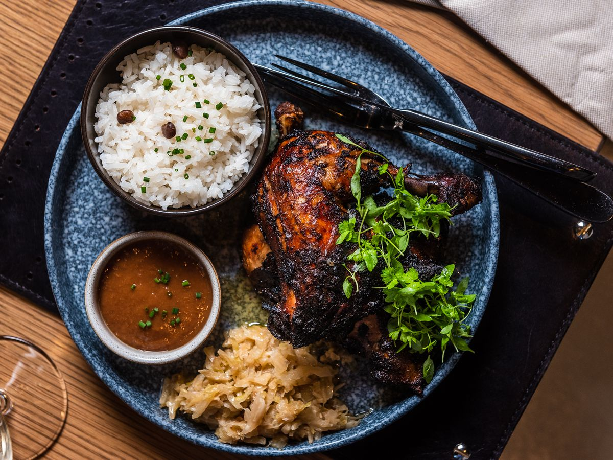

About Us
What is Jerk?
Jerk cooking is the soul of Lets Jerk It – hot, spicy and full of life. Centuries ago (way back inna time), Jerk cooking was born in the lush tropical hills of Jamaica. Runaway slaves called the Maroons, used native spices like thyme, pimento berries (all spice), escallion and fiery hot scotch bonnet pepper, to season meats that were slowly roasted over pimento wood to create this deliciously spicy dish. It is out of this technique that Jerk cooking was born. At Lets Jerk It, we have brought this tradition to your plate with our own unique combination of these very same spices on our meats to create an authentic jerk taste.
Our passion at Lets Jerk It, is to take the amazing tastes and flavors from Jamaica to create new exciting dishes, and serve them with warm island hospitality. We take pride in our rich culinary heritage, and wish to share the best of what Jamaica has to offer with the rest of the world. And trust mi this is not fast food, this is island style food - cooked slowly and served quickly!
One love.
#EatGoodLiveGood
At Lets Jerk It, we use our own unique combination of these very same spices on our chicken, pork and fish to create an authentic jerk taste. But wait - mi bredrin, can’t stand the heat? Island Grill serves up other island dishes that give you the big taste of the Caribbean. Our own special BBQ, rice and peas, curries and stews have all the goodness that makes island cooking delicious and exciting.
One love.
#YouPickItWeJerkIt
